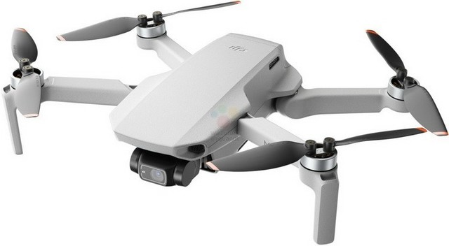

首页
科技前沿
美食天地
生活妙招
健康养生
最新科技资讯
2024 年 3 月 20 日，西安人社通、长安 bank、西安银行、高速行 ETC、云达人、平安是福、卡一车、怡康到家、金牌管家、西北工业大学等多家陕西本地企业官宣正式启动鸿蒙原生应用开发，涵盖了政务民生、交通出行、新闻资讯、银行金融、智慧医疗、校园等领域的应用。2024 年 4 月 7 日，华为宣布：有超 4000 个应用适配鸿蒙系统。

热门科技产品
采用的 OcuSync 2.0 图传系统具有很强的稳定性和抗干扰能力。在城市等信号干扰较多的环境中，依然能够保持稳定的图传，让用户可以实时监控无人机拍摄的画面，以便及时调整拍摄角度和参数。 国内实测图传距离可达 6 公里，在国外环境下可达到 10 公里，这样的图传距离能够满足大部分用户的拍摄需求，无论是拍摄广阔的自然风光还是大型的活动场景，都可以轻松应对。
前沿科技见解
AI 系统可能会产生偏见，这是由于训练数据的偏差或者模型本身的局限性导致的。例如，在人脸识别系统中可能存在对某些种族或性别群体的误识别率较高的情况。此外，AI 生成的内容可能涉及知识产权问题，如 AI 创作的作品的版权归属尚不明确。同时，随着 AI 在军事等敏感领域的应用，也引发了关于自主武器系统等伦理问题的讨论。